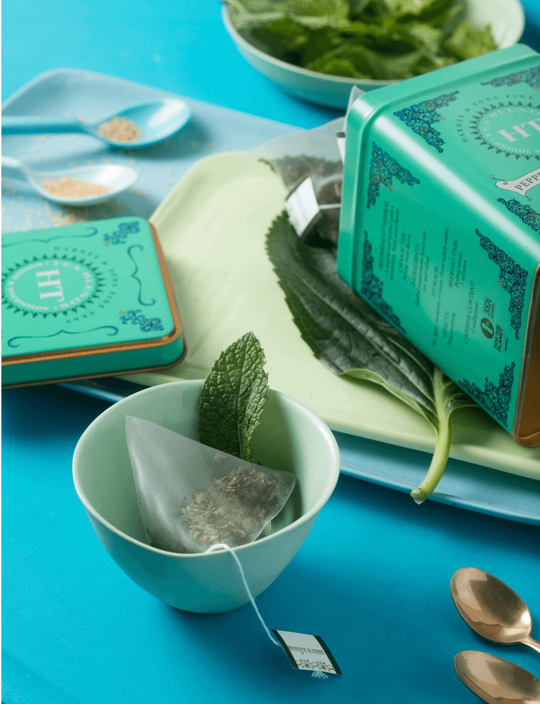

Peppermint Herbal
Our marvelously brisk Peppermint comes from Oregon, and the leaves produce a wonderfully aromatic and crisp tasting tisane. We find a cup of Peppermint can also get a pesky stomach under control in no time. Caffeine-free herbal.
